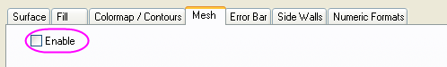
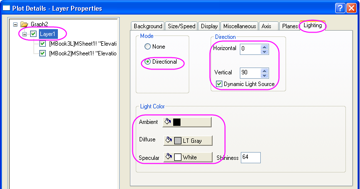

Oberfläche mit transparenter Ebene
3D-Surface-TransPlane
Dieses Diagramm zeigt die Topografie des Lake Ontario. Es handelt sich hierbei um die Kombination von einer 3D-Oberfläche und einer transparenten Ebene.

Origin-Version mind. erforderlich: 2015 SR0
Was Sie lernen werden
Dieses Tutorial zeigt Ihnen, wie Sie:
- ein 3D-Oberflächendiagramm mit Farbabbildung zeichnen.
- eine transparente Ebene auf einem existierenden 3D-Oberflächendiagramm zeichnen.
- die Beleuchtung für ein 3D-Oberflächendiagramm festlegen.
Schritte
Dieses Tutorial basiert auf dem Projekt Tutorial Data: <Origin-Verzeichnis>\Samples\Tutorial Data.opj.
- Öffnen Sie das Projekt Tutorial Data und navigieren Sie zum Ordner Surface With Transparent Plane im Projekt Explorer.
- Aktivieren Sie MBook3L und markieren Sie alle Daten. Wählen Sie Zeichnen: 3D: 3D-Farbababbildung im Hauptmenü. Es wird ein Diagrammfenster erzeugt:
- Klicken Sie mit der rechten Maustaste auf das Layersymbol 1 oben rechts im Diagramm, wählen Sie Layerinhalt und fügen Sie MBook2 als 3D-Oberfläche in diesen Layer ein, indem Sie sie vom linken Bedienfeld in das rechte verschieben. Dazu verwenden Sie die Pfeilschaltfläche in der Mitte des Dialogs, wie unten gezeigt: Klicken Sie auf OK, um den Dialog zu schließen.
- Klicken Sie zum Öffnen des Dialogs Details Zeichnung doppelt auf das Diagramm. Wenn das linke Bedienfeld nicht erweitert ist, verwenden Sie die Schaltfläche
 . In diesem Dialog wird das 3D-Diagramm benutzerdefiniert angepasst. Wählen Sie Layer1 im linken Bedienfeld, wechseln Sie zur Registerkarte Achsen im rechten Bedienfeld und wenden Sie die unten stehenden Einstellungen an.
. In diesem Dialog wird das 3D-Diagramm benutzerdefiniert angepasst. Wählen Sie Layer1 im linken Bedienfeld, wechseln Sie zur Registerkarte Achsen im rechten Bedienfeld und wenden Sie die unten stehenden Einstellungen an.
- Wählen Sie die erste Zeichnung im linken Bedienfeld unter Layer1 und klicken Sie auf der Registerkarte Farbpalette/Kontur auf die Überschrift Ebene, um den Dialog Ebenen festlegen zu öffnen. Wenden Sie die Einstellungen unten in diesem Dialog an.
- Klicken Sie auf OK, um den Dialog Ebenen festlegen zu schließen. Klicken Sie auf die Überschrift Füllung, um den Dialog Füllung zu öffnen. Wählen Sie im Dialog Füllung die Option Palette laden und klicken Sie dann auf die Schaltfläche Palette auswählen, um die Palette Watermelon auszuwählen. Klicken Sie auf OK, um den Dialog Füllung zu schließen.
- Um Konturen zu entfernen, deaktivieren Sie auf der Registerkarte Farbpalette/Kontur das Kontrollkästchen Konturen aktivieren:
- Um das Drahtgitter zu entfernen, deaktivieren Sie auf der Registerkarte Drahtgitter das Kontrollkästchen Aktivieren:
- 
- Wechseln Sie zur Registerkarte Seitenwände, aktivieren Sie das Kontrollkästchen Aktivieren und legen Sie dann die Seitenwände für X und Y, wie unten zu sehen, fest.
- Gehen Sie zur Registerkarte Numerisches Format und setzen Sie Dezimalstellen auf 0.
- Wählen Sie die zweite Zeichnung im linken Bedienfeld und wechseln Sie zur Registerkarte Oberfläche. Setzen Sie die Transparenz auf 48.
- Gehen Sie im Dialog Details Zeichnung zur Registerkarte Füllen, aktivieren Sie Stückweise füllen und legen Sie die Farbe Blau fest. Klicken Sie auf Übernehmen, um die Änderungen sehen zu können.
- Im nächsten Schritt wird der Beleuchtungseffekt festgelegt. Markieren Sie Layer1 im linken Bedienfeld und wenden Sie auf der Registerkarte Beleuchtung die Einstellungen, wie unten gezeigt, an:
- 
- Gehen Sie zur Registerkarte Ebenen und deaktivieren Sie die Kontrollkästchen für die Ebenen XY, YZ und ZX. Klicken Sie auf OK, um den Dialog Details Zeichnung zu schließen.
- Der nächste Schritt besteht in dem Hinzufügen eines Titels. Klicken Sie mit der rechten Maustaste auf den leeren Bereich des Diagrammfensters und wählen Sie Layertitel hinzufügen/modifizieren im Menü. Geben Sie Lake Ontario als Layertitel ein. Klicken Sie mit der rechten Maustaste auf den Titel und wählen Sie Einstellungen im Menü, um den Dialog Objekteigenschaften zu öffnen. Setzen Sie auf der Registerkarte Text die Schriftgröße auf 31, gehen Sie dann zur Registerkarte Rahmen und setzen Sie den Rahmen auf Schatten.
- Um die Farbskala benutzerdefiniert anzupassen, klicken Sie doppelt auf die Farbskala. Der Dialog Steuerung der Farbskala wird geöffnet. Wählen Sie Linie und Hilfsstriche im linken Bedienfeld. Deaktivieren Sie im rechten Bedienfeld Linie und Hilfsstriche auf der rechten Seite und Rand zeigen, um die Linie, die Hilfsstriche und den Rand auszublenden.
- Wählen Sie Layout im linken Bedienfeld, setzen Sie die Breite der Farbbalken auf 150, um die Breite der Farbskala zu ändern. Setzen Sie den Beschriftungsversatz von Balkenrand auf 0, um die Beschriftung näher zu der Farbskala zu verschieben.
- Wählen Sie Titel im linken Bedienfeld. Klicken Sie im rechten Bedienfeld auf Zeigen , um den Titel anzuzeigen, und fügen Sie (m) am Ende des Textfelds Titel hinzu, um den Titel Elevation(m) für die Farbskala anzuzeigen. Ändern Sie die Größe im Zweig Schrift in 18. Klicken Sie auf OK, um diese Einstellungen anzuwenden und den Dialog Achsen zu schließen.
- Sie können doppelt auf den Titel der Farbskala klicken, um den direkten Bearbeitungsmodus zu aktivieren. Positionieren Sie den Cursor hinter %(?R,@LA) und drücken Sie ENTER auf der Tastatur, um eine neue Zeile für (m) zu beginnen. Das Diagramm sollte am Ende folgendermaßen aussehen.